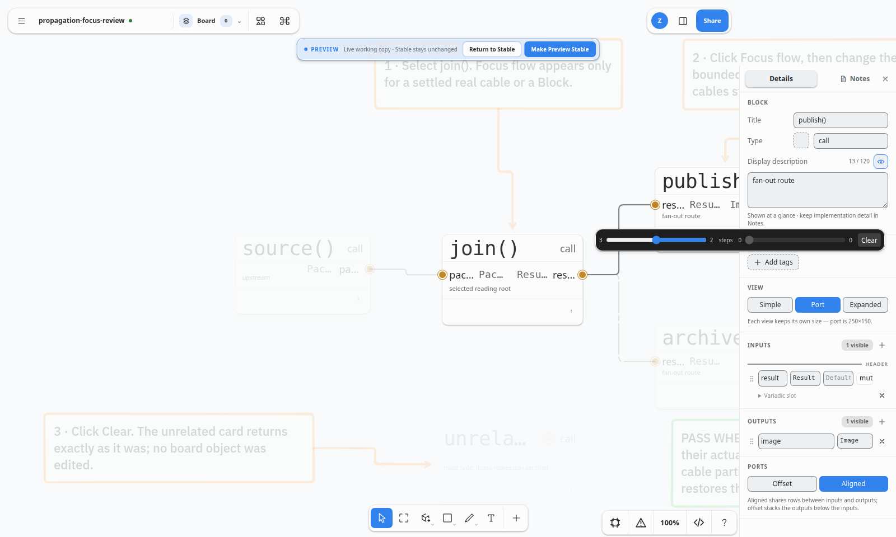

The responsive clamp gives a clear drag runway without allowing Focus to consume an unbounded toolbar width. The real 1600px smoke viewport resolves both ranges to
180px.Follow-up gallery · 2026-09-04
The outward-facing Focus control is unchanged in meaning and order. Its two native ranges now reserve a materially legible 110–180px desktop lane, so a horizon can be adjusted in one quick drag rather than a tiny thumb nudge.
180px.maximum · RTL range · selected · steps · selected · range · maximum · Clear. Upstream is still a native RTL range, preserving the proven ArrowLeft expansion behavior.The propagation-focus smoke journey retains its existing graph, keyboard, persistence, and DOM-order checks, and adds an exact rendered-width assertion. This new capture intentionally supersedes only the smoke output; the preceding outward-slider screenshot and gallery remain in the repository as historical evidence.

Run: npm run test:propagation-focus · screenshot: docs/assets/propagation-focus-slider-legibility-live-2026-09-04.png